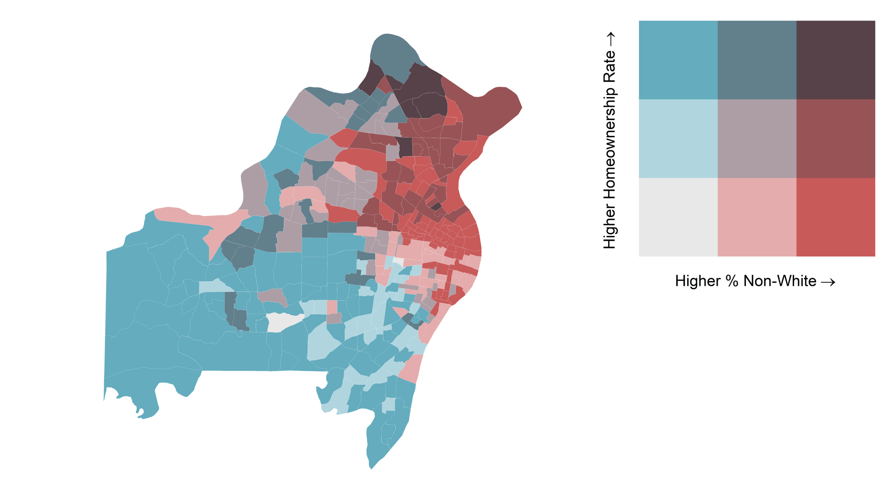
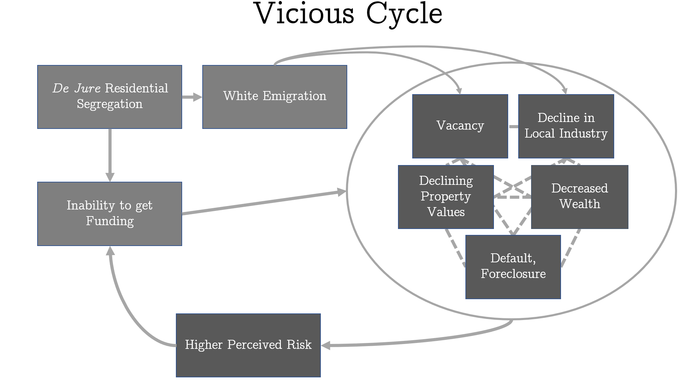
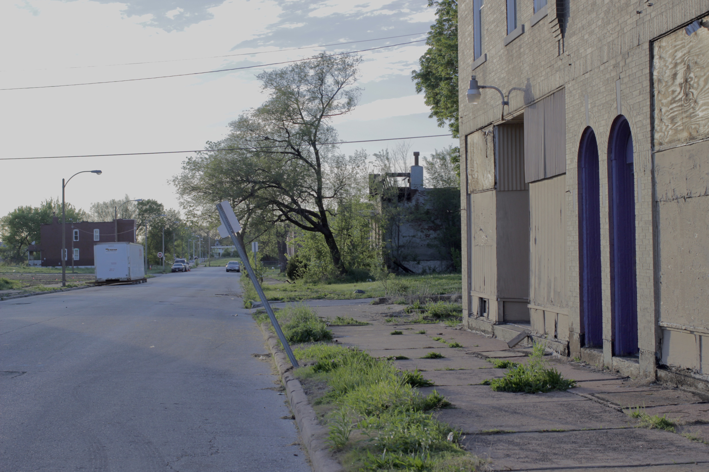
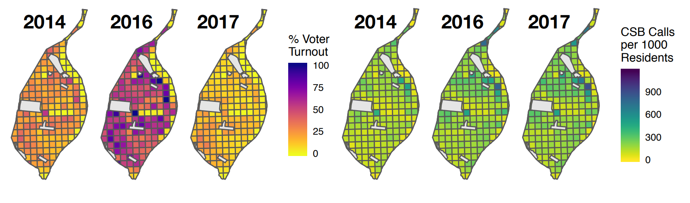
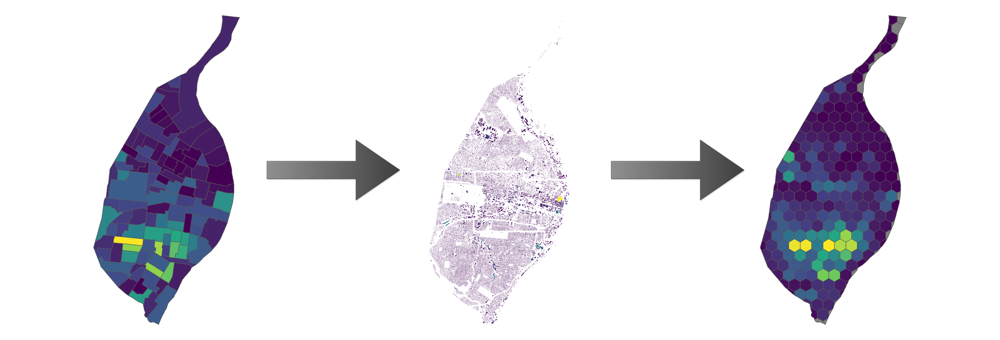

Economic resources are not allocated uniformly. A variety of social conditions affect an individual's ability to obtain and accumulate capital. One area in which this is most apparent is the housing market. In my undergraduate capstone, I investigated demographic patterns of mortgage lending in St. Louis, and discovered a disparity in funding between predominantly black and predominantly white neighborhoods.
Building on the theories I discovered earlier, I plan to expand this line of inquiry much further. That is, I believe there to be economic costs to inequality that reduce economic productivity across society. One example is the lack of medical insurance that causes diseases to progress. Late stage disease is more costly to amend, and that cost is therefore shared among us all. The concentration of labor markets reduces regional wealth, affecting public education, and resulting in a smaller qualified labor force, thereby necessitating larger salaries. It is these mechanisms that I am fascinated by.
Vacancy is intricately linked to a number of other social phenomena. I became interested in vacancy first as it relates to economics, and similarly how it relates to violent crime. I soon realized that an explicit definition of vacancy is elusive, and I continue to work with the St. Louis Vacancy Collaborative to generate a public dataset for long term use in research.
The modern American city collects millions of points of data about its environment and how citizens interact with that environment. However, this data is largely untapped in both academic and commercial settings. The usefulness and accuracy of these data remains unknown. One current project of mine looks to quantify the relationship of non-emergency requests for service with voter turnout in two large metropolitan areas. Preliminary results suggest that local civic participation in elections is highly correlated. This may suggest that areas of low civic participation have a greater number of unaddressed concerns.
These data are numerous, which presents both challenges and opportunities for applying advanced methodologies. Here are 90,000 potholes in Boston between 2011 and 2019 visualized. Interact in Full Screen
St. Louis has the highest gun violence rate per capita among all American cities. It is also the city in which I happen to reside. This inquiry alone began my journey into public health research. Through the Gun Violence Initiative at Washington University in St. Louis, I've worked with 12 years of crime data, mapped violence prevention efforts, and observed the causal environmental factors for violence. In my most ambitious project to date, I fit risk terrain models to observe the effects of environmental variables on risk of violent crime. The result is an incredibly detailed measure of risk across the city as a whole. Interact in Full Screen
Geographic data is becoming ubiquitous thanks to advances in technology. However, methods for working with this data have lagged data collection efforts. The simplest of techniques, such as geocoding (converting address strings to geographic coordinates) remain expensive and highly un-reproducible. In a recent project, Chris Prener and I investigate the relative accuracy of 14 commercial geocoders and build our own local geocoder.
Another issue that often arises when working with geographic data is the modifiable areal units problem (MAUP). Frequently, it is necessary to interpolate data to different aggregate units in order to conduct spatial analyses. Techniques for doing so are described in literature, but remain unimplemented in any open source language. Chris Prener and I are building a suite of tools to support areal weighted interpolation, binary dasymetric interpolation and 3-class dasymetric regression interpolation.
Routine access to medical care is not even across the population. For a subset of infectious disease, sexually transmitted infections, there exist widespread efforts to provide convenient care at no cost to patients. However, these efforts are severely under-utilized. In work published in The Journal of Sexually Transmitted Diseases, my coauthors and I explore the severity of this under-utilization.
The spread of sexually transmitted infections is also highly proximal to other risky behaviors, such as the use of intravenous drugs. In work published in The Journal of Infectious Diseases, my coauthors and I find a recent increase in the number of syphilis cases in rural counties in Missouri, closely linked to risk behaviors such as IV-drug use.